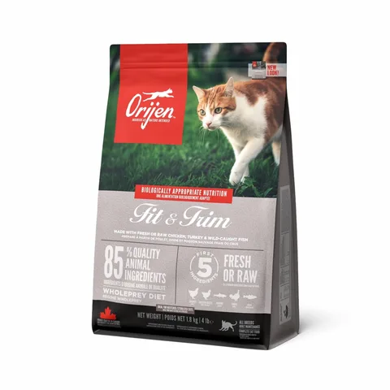

ORIJEN
ORIJEN Fit & Trim
乾飼料・無穀・體重控制・1.8kg／5.4kg 袋
比歷史低價高 52%比 30 天前便宜 12.3%
90 天價格水準：偏高（最低 €11.71/kg ～ 最高 €20.23/kg，依過去 14 天每日最低價）
商店報價（依每單位價排序）
| 店家 | 規格 | 總價 | 每單位價 | 條件 | 購買 |
|---|---|---|---|---|---|
| Huisdieren.nl | 1x1.8kg | €31.94 | €17.74/kg | 滿 €59 免運・運費 €6.95 Black Friday code BLACKFRIDAY2026：全站額外 -10%（11-21～11-27）；2026-11-27 live browser：Fit & Trim 1.8kg €35.49（原 €38.99），價格不變，有貨；黑五碼 BLACKFRIDAY2026 全站額外 -10% 今日最後一天，折後 €31.94（按 -10% 計算，未加車驗證結帳價），仍為最佳價。免運門檻 €59。 | 前往 → |
| Petgamma | 1x5.4kg | €63.22 | €11.71/kg | 運費見 Petgamma；ShopBuddies 5% 經 ShopBuddies 返現 €2.73 沿用 2026-11-07 報價 | 前往 → |
| Amazon.nl（賣家 Plein） | 1x5.4kg | €65.70 | €12.17/kg | 免運 經 CashbackXL 返現 €4.34 沿用 2026-11-07 報價 | 前往 → |
| Petgamma | 1x1.8kg | €34.66 | €19.26/kg | 滿 €50 免運 經 ShopBuddies 返現 €1.49 沿用 2026-11-07 報價 | 前往 → |
| Pharmapets | 1x1.8kg | €35.99 | €19.99/kg | 滿 €39 免運・運費 €3.99 沿用 2026-11-07 報價 | 前往 → |
| Medpets | 1x1.8kg | €36.42 | €20.23/kg | 滿 €69 免運・運費 €4.95・最低訂單 €14.95 需訂閱定期配送 沿用 2026-11-17 報價 2026-11-17 browser.open（JSON-LD）：1.8kg €38.75 有貨，與 2026-11-15 相同，無變化；同頁 5.4kg €69.95／Herhaal €65.75 亦與 11-15 相同。 | 前往 → |
| Brekz | 1x5.4kg | €63.95 | €11.84/kg | 滿 €35 免運 沿用 2026-11-15 報價 未核實 2026-11-15 curl 重抓頁面，確認頁面仍含上次價格字串（未逐變體結構化解析、庫存／運費／促銷沿用 11-13）；價格視為同 11-13；返現率沿用（ShopBuddies zooplus 1.33%/新客8%、Medpets 4%、Brekz 3.5%、YesCashback bestpetfoods 4% 今日重查未變；CashbackXL 頁為 JS 未能讀取＝未確認） | 前往 → |
| bestpetfoods | 1x5.4kg | €64.55 | €11.95/kg | €50 起免運，否則 €5.95；定期配送 95 折不計返現 沿用 2026-11-15 報價 未核實 2026-11-15 curl 重抓頁面，確認頁面仍含上次價格字串（未逐變體結構化解析、庫存／運費／促銷沿用 11-13）；價格視為同 11-13；返現率沿用（ShopBuddies zooplus 1.33%/新客8%、Medpets 4%、Brekz 3.5%、YesCashback bestpetfoods 4% 今日重查未變；CashbackXL 頁為 JS 未能讀取＝未確認） | 前往 → |
| Petfooddiscount.nl | 1x5.4kg | €65.95 | €12.21/kg | 運費 €4.95 沿用 2026-11-15 報價 未核實 2026-11-15 curl 重抓頁面，確認頁面仍含上次價格字串（未逐變體結構化解析、庫存／運費／促銷沿用 11-13）；價格視為同 11-13；返現率沿用（ShopBuddies zooplus 1.33%/新客8%、Medpets 4%、Brekz 3.5%、YesCashback bestpetfoods 4% 今日重查未變；CashbackXL 頁為 JS 未能讀取＝未確認） | 前往 → |
| PetShop24 | 1x5.4kg | €77.95 | €14.44/kg | 滿 €55 免運・運費 €5.75 沿用 2026-11-15 報價 未核實 2026-11-15 curl 重抓頁面，確認頁面仍含上次價格字串（未逐變體結構化解析、庫存／運費／促銷沿用 11-13）；價格視為同 11-13；返現率沿用（ShopBuddies zooplus 1.33%/新客8%、Medpets 4%、Brekz 3.5%、YesCashback bestpetfoods 4% 今日重查未變；CashbackXL 頁為 JS 未能讀取＝未確認） | 前往 → |
| Zoofera | 1x5.4kg | €78.78 | €14.59/kg | 免運 沿用 2026-11-15 報價 未核實 2026-11-15 curl 重抓頁面，確認頁面仍含上次價格字串（未逐變體結構化解析、庫存／運費／促銷沿用 11-13）；價格視為同 11-13；返現率沿用（ShopBuddies zooplus 1.33%/新客8%、Medpets 4%、Brekz 3.5%、YesCashback bestpetfoods 4% 今日重查未變；CashbackXL 頁為 JS 未能讀取＝未確認） | 前往 → |
| Brekz | 1x1.8kg | €36.75 | €20.42/kg | 滿 €35 免運 沿用 2026-11-15 報價 未核實 2026-11-15 curl 重抓頁面，確認頁面仍含上次價格字串（未逐變體結構化解析、庫存／運費／促銷沿用 11-13）；價格視為同 11-13；返現率沿用（ShopBuddies zooplus 1.33%/新客8%、Medpets 4%、Brekz 3.5%、YesCashback bestpetfoods 4% 今日重查未變；CashbackXL 頁為 JS 未能讀取＝未確認） | 前往 → |
| bestpetfoods | 1x1.8kg | €37.66 | €20.92/kg | €50 起免運，否則 €5.95；定期配送 95 折不計返現 經 YesCashback 返現 €1.29 沿用 2026-11-15 報價 未核實 2026-11-15 curl 重抓頁面，確認頁面仍含上次價格字串（未逐變體結構化解析、庫存／運費／促銷沿用 11-13）；價格視為同 11-13；返現率沿用（ShopBuddies zooplus 1.33%/新客8%、Medpets 4%、Brekz 3.5%、YesCashback bestpetfoods 4% 今日重查未變；CashbackXL 頁為 JS 未能讀取＝未確認） | 前往 → |
| Petfooddiscount.nl | 1x1.8kg | €37.95 | €21.08/kg | 運費 €4.95 沿用 2026-11-15 報價 未核實 2026-11-15 curl 重抓頁面，確認頁面仍含上次價格字串（未逐變體結構化解析、庫存／運費／促銷沿用 11-13）；價格視為同 11-13；返現率沿用（ShopBuddies zooplus 1.33%/新客8%、Medpets 4%、Brekz 3.5%、YesCashback bestpetfoods 4% 今日重查未變；CashbackXL 頁為 JS 未能讀取＝未確認） | 前往 → |
| Zoofera | 1x1.8kg | €40.35 | €22.42/kg | 免運 沿用 2026-11-15 報價 未核實 2026-11-15 curl 重抓頁面，確認頁面仍含上次價格字串（未逐變體結構化解析、庫存／運費／促銷沿用 11-13）；價格視為同 11-13；返現率沿用（ShopBuddies zooplus 1.33%/新客8%、Medpets 4%、Brekz 3.5%、YesCashback bestpetfoods 4% 今日重查未變；CashbackXL 頁為 JS 未能讀取＝未確認） | 前往 → |
| PetShop24 | 1x1.8kg | €41.95 | €23.31/kg | 滿 €55 免運・運費 €5.75 沿用 2026-11-15 報價 未核實 2026-11-15 curl 重抓頁面，確認頁面仍含上次價格字串（未逐變體結構化解析、庫存／運費／促銷沿用 11-13）；價格視為同 11-13；返現率沿用（ShopBuddies zooplus 1.33%/新客8%、Medpets 4%、Brekz 3.5%、YesCashback bestpetfoods 4% 今日重查未變；CashbackXL 頁為 JS 未能讀取＝未確認） | 前往 → |